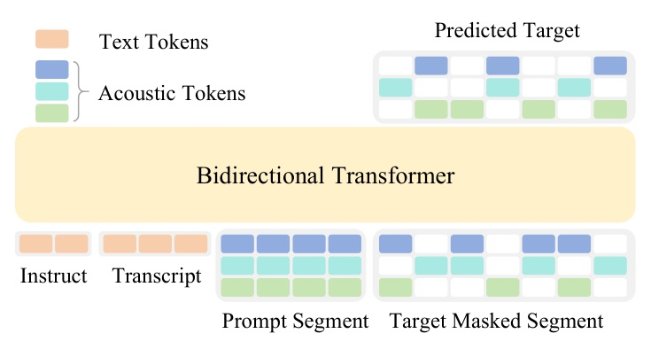
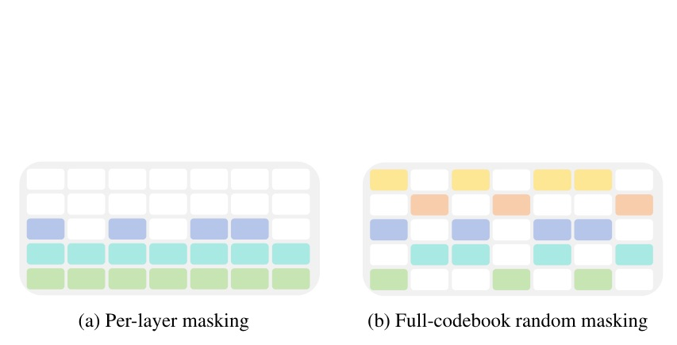

從 diffusion language model 到 600+ languages 的 zero-shot TTS

GitHub Trending selection: k2-fsa/OmniVoice (2026-09-13). Paper announcement is backfilled 145 days; it is not presented as a conference acceptance.
把 text 直接補成 multi-codebook acoustic tokens；真正讓單階段 NAR 撐住的，是 dense masking + LLM linguistic prior。
X is a T x C multi-codebook acoustic matrix; Y concatenates instruction and transcript text tokens.

| Dataset | SIM-o | WER | UTMOS |
|---|---|---|---|
| LibriSpeech-PC | 0.729 | 1.30 | 4.28 |
| Seed-TTS English | 0.741 | 1.60 | 3.91 |
| Seed-TTS Chinese | 0.777 | 0.84 | 3.11 |
| System | WER down | SIM-o up |
|---|---|---|
| OmniVoice | 2.850 | 0.830 |
| MiniMax-Speech | 3.774 | 0.766 |
| ElevenLabs Multilingual v2 | 10.950 | 0.655 |
Cantonese is a metric caveat: Whisper-based WER is 17.709; the authors report 2.273% with SenseVoice-Small but keep Whisper for benchmark consistency.
| System | Avg CER down | CER <=5% | CER <=10% |
|---|---|---|---|
| Ground truth | 5.11 | 75 | 92 |
| OmniVoice | 4.00 | 82 | 95 |
架構的簡化本身不夠。每次用 dense loss 看更多 acoustic token，再用 LLM prior 補回 language modeling，才把 direct NAR 的兩個弱點拆開處理。
| Masking | SIM-o up | WER down | UTMOS up |
|---|---|---|---|
| SoundStorm-style | 0.661 | 3.00 | 4.12 |
| MaskGCT-style | 0.660 | 2.04 | 4.17 |
| Full-codebook random | 0.697 | 1.57 | 4.23 |
| Full mask; one-codebook loss | 0.648 | 2.85 | 4.22 |
| Init / LR | Libri WER | Seed-en WER | Seed-zh WER |
|---|---|---|---|
| LLM init / 1e-4 | 1.57 | 1.72 | 0.89 |
| Random / 1e-4 | 2.79 | 2.34 | 1.11 |
| Random / 2e-4 | 2.52 | 2.43 | 1.01 |
| Random / 5e-4 | 2.56 | 2.07 | 1.01 |
| Setting | SIM-o up | WER down | UTMOS up |
|---|---|---|---|
| Without prompt denoise | 0.697 | 1.57 | 4.23 |
| With prompt denoise | 0.668 | 1.56 | 4.32 |
Authors interpret lower SIM-o as a cleaner, more standardized output no longer copying noise from the reference prompt.
| Inference steps | Batch 1 RTF | Batch 8 RTF |
|---|---|---|
| 16 | 0.0319 | 0.0224 |
| 32 | 0.0598 | 0.0414 |
Setup: 3-second prompt, 10-second generated clips. The paper compares 16-step batch-1 OmniVoice 0.0319 RTF to ZipVoice 0.0557 under the corresponding setup.
OmniVoice directly maps text to multi-codebook acoustic tokens, thereby bypassing the complexity and limitations of cascaded pipelines.
OmniVoice 直接將文字映射為多碼本聲學 token，避開級聯管線的複雜度與限制。§1 p.2
On average, 50% of the tokens are used for loss computation, C times more than per-layer masking strategy.
平均有 50% token 參與 loss，比逐層遮罩策略多 C 倍。§2.1.1 p.3
Even after extensive learning rate tuning, the WERs of models without LLM initialization are still consistently higher.
即使充分調整 learning rate，未經 LLM 初始化的模型 WER 仍持續較高。§4.3 p.10
A one-stage acoustic-token model, made credible by dense supervision and a transferred linguistic prior.